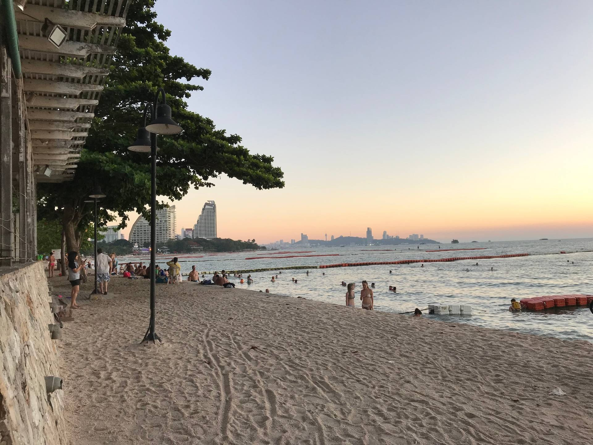

สถานที่ท่องเที่ยวที่น่าสนใจ
แนะนำสถานที่ท่องเที่ยวในจังหวัดชลบุรี

ประวัติศาสตร์และวัฒนธรรม
สถานที่ท่องเที่ยวที่สะท้อนถึงประวัติศาสตร์และวัฒนธรรมท้องถิ่น

วิวทิวทัศน์ที่สวยงาม
สัมผัสธรรมชาติและวิวทิวทัศน์ที่สวยงามของจังหวัดชลบุรี
ข้อมูลทั่วไป
- ชื่อจังหวัด: ชลบุรี
-
ตำแหน่งที่ตั้ง: ตั้งอยู่ในภาคตะวันออกของประเทศไทย
- ทิศเหนือ: ติดกับจังหวัดฉะเชิงเทรา
- ทิศใต้: ติดกับจังหวัดระยอง
- ทิศตะวันออก: ติดกับจังหวัดฉะเชิงเทรา จังหวัดจันทบุรี และจังหวัดระยอง
- ทิศตะวันตก: ติดกับอ่าวไทย
พิพิธภัณฑ์ปราสาทสัจธรรม
เกาะล้าน
จุดชมวิวเขาพระตำหนัก

เป็นชายหาดทางตอนเหนือของเมืองพัทยาบนชายฝั่งตะวันออกของอ่าวไทย
หาดวงศ์อมาตย์